Web Teknolojileri · Öğrenci: Elmir Abdulhasanli · Numara: 241229097
Depo: https://github.com/elmirabdulhasanli/yemekhane-otomasyonu
uygulama/). HTML5 + CSS3 arayüz frontend/ klasöründe Apache tarafından sunulur ve veriyi JavaScript fetch ile alır;
çerçeve (React vb.) kullanılmamıştır. Apache -D WEBAPI modunda /api/ isteklerini uygulamaya iletir.| Aşama | Etiket | Kanıt |
|---|---|---|
| 1 · Altyapı | asama-1 | scripts/asama1_dogrula.sh → rapor/ciktilar/asama1.txt |
| 2 · Uygulama | asama-2 | 7 ekran, katmanlı API, testler/e2e.mjs |
| 3 · Redis | asama-3 | scripts/asama3_dogrula.sh → rapor/ciktilar/asama3.txt |
| 4 · Değişiklik | asama-4 | db/init/04_degisiklik.sql, scripts/asama4_dogrula.sh → asama4.txt |
Tüm komut çıktıları elle kopyalanmadı; betikler gerçek komutları çalıştırıp çıktıyı dosyaya yazdı. Dizi: sıfırdan kurulum (Aşama 3 kodu) →
Aşama 1 ve 3 betikleri → çalışan sisteme migration ve yeni sürüm (Aşama 4) → down -v ile 04 dahil sıfırdan kurulum → testler.
Beş servis healthy, replica-setup Exited (0). Kaynakta yapılan 100 TL yükleme replikada görünüyor,
replikaya yazma ERROR 1290 (--super-read-only) ile reddediliyor, replika durdurulup başlatıldığında aradaki 200 TL'lik yüklemeyi
GTID otomatik konumlandırma sayesinde yakalıyor ve bakiye = SUM(hareket) kuralı replikada da tutuyor.
### 1. Tüm servisler healthy, replica-setup Exited (0)
$ docker compose ps -a --format 'table {{.Service}}\t{{.Status}}'
SERVICE STATUS
frontend Up 23 seconds (healthy)
mysql-primary Up 23 seconds (healthy)
mysql-replica Up 22 seconds (healthy)
redis Up 22 seconds (healthy)
replica-setup Exited (0) 11 seconds ago
uygulama Up 11 seconds (healthy)
### 1b. replica-setup günlüğü
$ docker compose logs --no-log-prefix replica-setup
[replica-setup] Kaynakta replikasyon kullanıcısı oluşturuluyor.
[replica-setup] Kaynağın anlık kopyası alınıyor.
Warning: A partial dump from a server that has GTIDs will by default include the GTIDs of all transactions, even those that changed suppressed parts of the database. If you don't want to restore GTIDs, pass --set-gtid-purged=OFF. To make a complete dump, pass --all-databases --triggers --routines --events.
[replica-setup] Kopya replikaya yükleniyor.
[replica-setup] Replikasyon başlatılıyor.
[replica-setup] Replikasyon çalışıyor (IO=Yes, SQL=Yes). Replika salt okunur.
### 1c. Replikasyon durumu
$ docker compose exec -T mysql-replica mysql -uroot -pyemekhane_kok -e 'SHOW REPLICA STATUS\G' | grep -E 'Source_Host|Replica_IO_Running|Replica_SQL_Running:|Seconds_Behind_Source|Auto_Position'
Source_Host: mysql-primary
Replica_IO_Running: Yes
Replica_SQL_Running: Yes
Seconds_Behind_Source: 0
Auto_Position: 1
### 2a. Replikada önceki bakiye (kullanıcı 7)
$ docker compose exec -T mysql-replica mysql -uyemekhane_app -pUyg_2026 yemekhane -e 'SELECT id, ad, bakiye FROM kullanicilar WHERE id = 7'
id ad bakiye
7 Mehmet 355.00
### 2b. Kaynakta 100 TL yükleme
$ docker compose exec -T mysql-primary mysql -uyemekhane_app -pUyg_2026 yemekhane -e 'CALL sp_bakiye_yukle(7, 100)'
hareket_id bakiye
455 455.00
### 2c. Replikada yeni bakiye
$ docker compose exec -T mysql-replica mysql -uyemekhane_app -pUyg_2026 yemekhane -e 'SELECT id, ad, bakiye FROM kullanicilar WHERE id = 7'
id ad bakiye
7 Mehmet 455.00
### 3. Replikaya yazma denemesi (ERROR 1290 beklenir)
$ docker compose exec -T mysql-replica mysql -uyemekhane_app -pUyg_2026 yemekhane -e 'CALL sp_bakiye_yukle(7, 50)'
ERROR 1290 (HY000) at line 1: The MySQL server is running with the --super-read-only option so it cannot execute this statement
### 3b. Replika read_only ayarları
$ docker compose exec -T mysql-replica mysql -uyemekhane_app -pUyg_2026 yemekhane -e 'SELECT @@read_only, @@super_read_only'
@@read_only @@super_read_only
1 1
### 4a. Replikayı durdur
$ docker compose stop mysql-replica
Container yemekhane-mysql-replica-1 Stopping
Container yemekhane-mysql-replica-1 Stopped
### 4b. Replika kapalıyken kaynakta 200 TL yükleme
$ docker compose exec -T mysql-primary mysql -uyemekhane_app -pUyg_2026 yemekhane -e 'CALL sp_bakiye_yukle(7, 200)'
hareket_id bakiye
456 655.00
### 4c. Kaynaktaki bakiye
$ docker compose exec -T mysql-primary mysql -uyemekhane_app -pUyg_2026 yemekhane -e 'SELECT id, bakiye FROM kullanicilar WHERE id = 7'
id bakiye
7 655.00
### 4d. Replikayı başlat
$ docker compose start mysql-replica
Container yemekhane-mysql-replica-1 Starting
Container yemekhane-mysql-replica-1 Started
### 4e. Replika aradaki değişikliği yakaladı
$ docker compose exec -T mysql-replica mysql -uyemekhane_app -pUyg_2026 yemekhane -e 'SELECT id, bakiye FROM kullanicilar WHERE id = 7'
id bakiye
7 655.00
### 4f. Bakiye = hareket toplamı (replikada)
$ docker compose exec -T mysql-replica mysql -uyemekhane_app -pUyg_2026 yemekhane -e 'SELECT k.bakiye, SUM(h.tutar) AS hareket_toplami FROM kullanicilar k JOIN bakiye_hareketleri h ON h.kullanici_id = k.id WHERE k.id = 7 GROUP BY k.id'
bakiye hareket_toplami
655.00 655.00
### 4g. Replikasyon yine çalışıyor
$ docker compose exec -T mysql-replica mysql -uroot -pyemekhane_kok -e 'SHOW REPLICA STATUS\G' | grep -E 'Replica_IO_Running|Replica_SQL_Running:|Seconds_Behind_Source'
Replica_IO_Running: Yes
Replica_SQL_Running: Yes
Seconds_Behind_Source: 0
### 5. Redis
$ docker compose exec -T redis redis-cli ping
PONG
| Katman | Klasör | Görevi |
|---|---|---|
| Rota | src/rotalar/index.js | URL → controller, oturum ve rol ara katmanları |
| Controller | src/controllers/ | İsteği okur, servisi çağırır, JSON yazar. SQL yok, iş kuralı yok. |
| Servis (iş) | src/servisler/, src/kurallar.js | İş kuralları (rol fiyatı, iptal edilebilirlik, "yalnızca kullanılmış menü puanlanır"), okuma/yazma sunucusu seçimi |
| Veri | src/veri/, src/db/havuzlar.js | Tüm SQL burada. Para hareketi yapan işlemler yalnızca stored procedure çağrısıdır. |
| Arayüz | frontend/*.html, js/, css/ | Yalnızca gösterim; fiyat, düğme durumu, uyarı gibi kararlar API'den gelir. |
POST /api/rezervasyonlarTarayıcı → Apache (ProxyPass /api/) → rota → controller → servis → veri katmanı → CALL sp_rezervasyon_yap (kaynak) → JSON yanıt.
r.post('/rezervasyonlar', oturumGerekli, rezervasyon.yap);async function yap(req, res) { res.status(201).json(await rezervasyonServis.yap(req.oturum, req.body)); }async function yap(oturum, govde) {
const menuId = kurallar.pozitifTamsayi(govde.menu_id, 'menü');
const porsiyon = kurallar.porsiyonCoz(govde.porsiyon); // öğün kontrolü ve %60 ücret yordamda
const sonuc = await rezervasyonVeri.rezervasyonYap(oturum.kullaniciId, menuId, porsiyon);
await oturumServis.yazmaYapildi(oturum);
gunluk.bilgi('rezervasyon', 'yapıldı', { kullanici: oturum.kullaniciId, menu: menuId, ...sonuc });
// Yordamın döndürdüğü bakiye kaynaktaki güncel değerdir (replika henüz yakalamamış olabilir).
return sonuc;function rezervasyonYap(kullaniciId, menuId, porsiyon) {
return yordamCagir('sp_rezervasyon_yap', [kullaniciId, menuId, porsiyon]);
}async function yordamCagir(ad, parametreler) {
const yer = parametreler.map(() => '?').join(', ');
try {
const [sonuclar] = await yazma.query(`CALL ${ad}(${yer})`, parametreler);
return sonuclar[0][0];
} catch (hata) {
throw mysqlHatasiniCevir(hata);function mysqlHatasiniCevir(hata) {
if (hata && hata.errno === 1644) return new IsHatasi(hata.sqlMessage, 400);
if (hata && hata.errno === 1062) return new IsHatasi('Bu kayıt zaten var.', 409);
return hata; // 3819 dahil diğer her şey: 500, genel mesaj (ara/hataYakalayici.js)Yordam SQLSTATE 45000 (MySQL 1644) döndürürse mesajı değiştirilmeden {"hata": "Bakiye yetersiz."} olarak 400 ile döner ve
arayüzde kırmızı bildirim kutusunda gösterilir (ekran 8). CHECK ihlali (3819) programlama hatasıdır; kullanıcı genel bir mesaj görür, ayrıntı günlüğe yazılır.
| İşlem | Sunucu |
|---|---|
| Rezervasyon, iptal, bakiye yükleme (yordamlar), değerlendirme, menü oluşturma/düzenleme, alerjen kaydı | Kaynak (mysql-primary) |
| Yazma öncesi kontroller (ör. rezervasyon "kullanıldı" mı), giriş | Kaynak |
| Menüler, haftalık liste, rezervasyonlarım, hareket geçmişi, yönetici raporu | Replika (mysql-replica) |
| Kullanıcının kendi yazmasından sonraki 5 sn içindeki okumaları | Kaynak |
function okuyucu(oturum) {
if (oturum && oturum.sonYazma && Date.now() - oturum.sonYazma < config.kendiYazdiginiOkuMs) {
return yazma;
}
return okuma;Neden rezervasyondan hemen sonraki bakiye kaynaktan okunur? MySQL replikasyonu eşzamansızdır: kaynak işlemi COMMIT ettiği anda yanıt
verir, değişiklik binlog üzerinden replikaya birkaç milisaniye ile birkaç saniye arasında (yük altında ya da replika yeniden bağlanırken daha uzun)
sonra uygulanır. Rezervasyondan hemen sonra bakiye replikadan okunsaydı kullanıcı parasının düşmediğini görebilir, aynı rezervasyonu tekrar
denemeye ya da gereksiz yükleme yapmaya kalkabilirdi. Bu yüzden ekranda gösterilen bakiye, sp_rezervasyon_yap'ın kaynakta
döndürdüğü değerdir (üst çubuk anında güncellenir); ayrıca oturuma sonYazma zamanı yazılır ve o kullanıcının sonraki 5 saniyedeki
okumaları kaynağa yönlenir ("kendi yazdığını oku"). Bakiye ekranı hangi sunucudan okuduğunu da gösterir. Bu gecikmeyi testler sırasında
gerçekten gözlemledik: kaynak yeniden başlatıldığında replika ancak 60 sn sonra yeniden bağlandı (MySQL'in varsayılan yeniden deneme süresi);
o arada replikadaki veri eskiydi. Replikaya hiç ulaşılamazsa uygulama okumayı kaynağa düşürür.
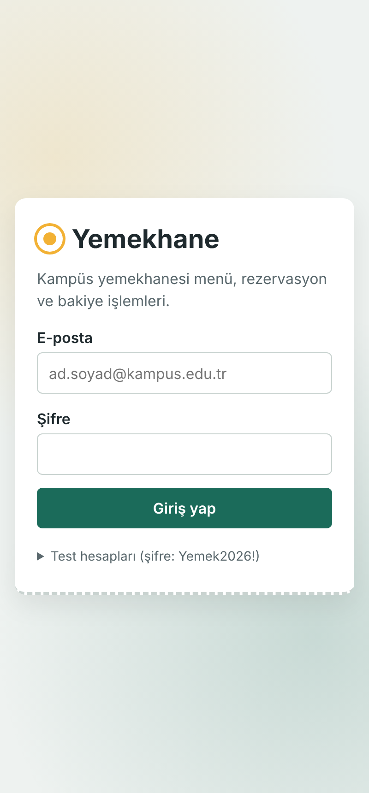
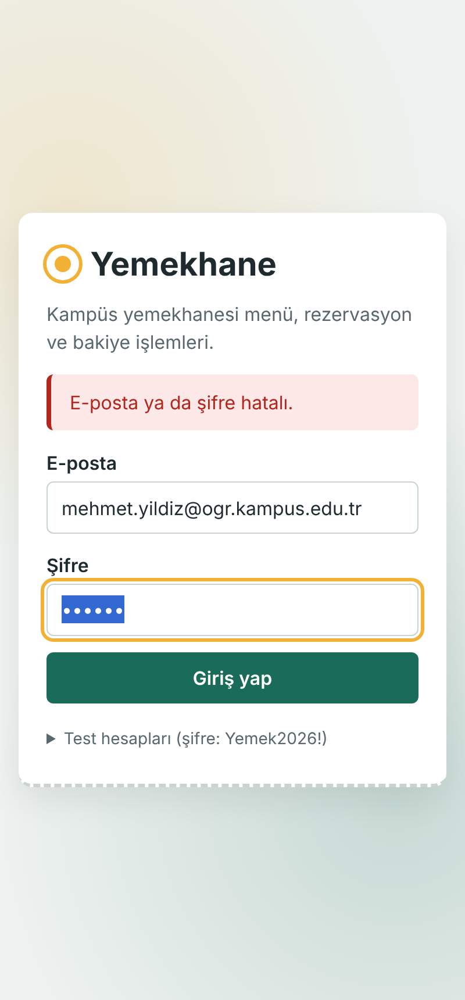
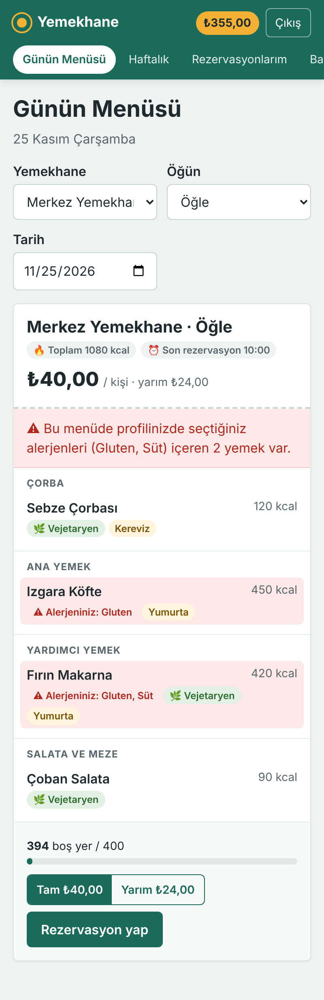
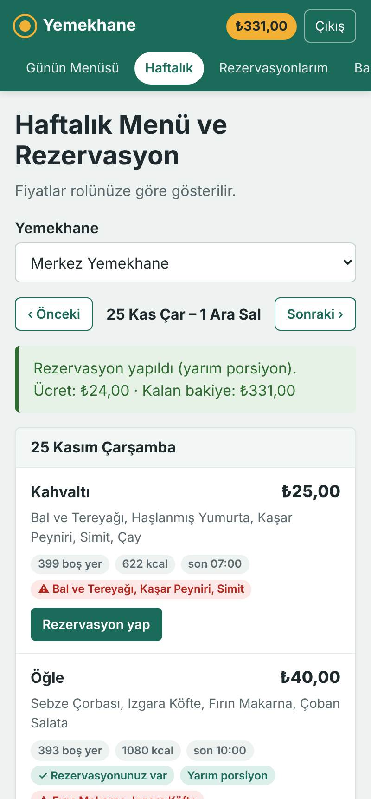
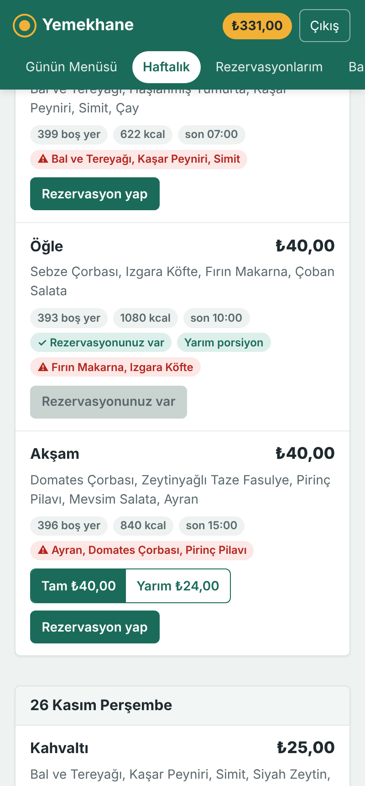
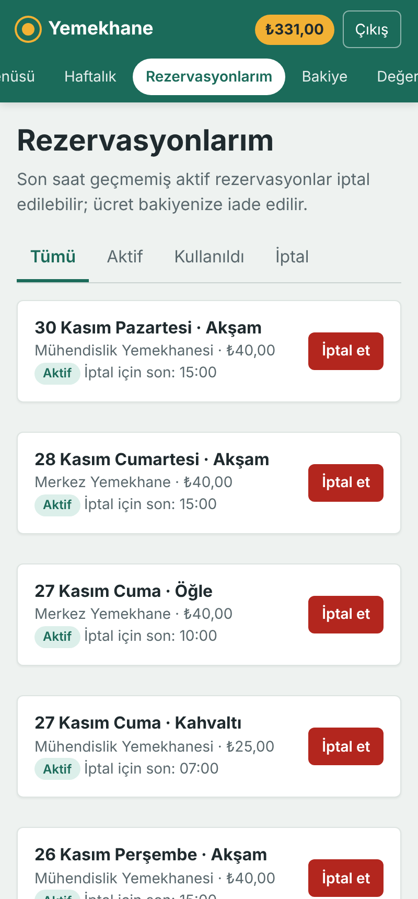
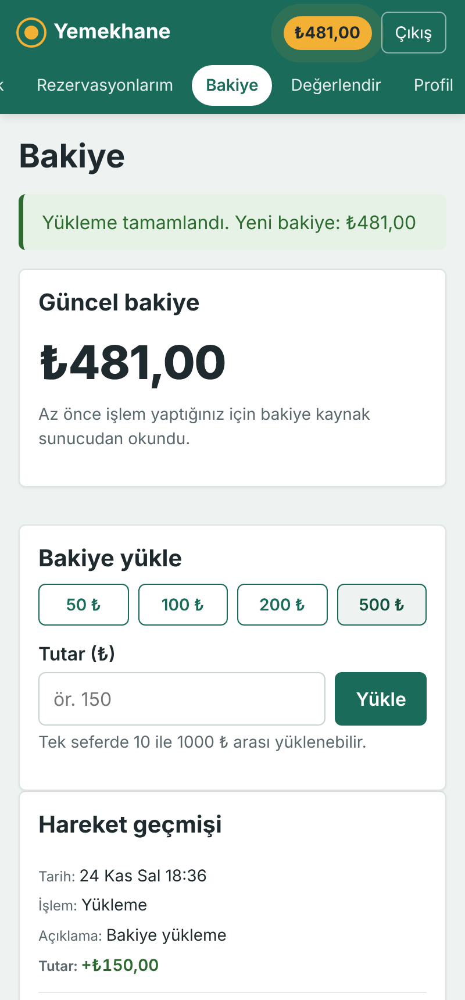
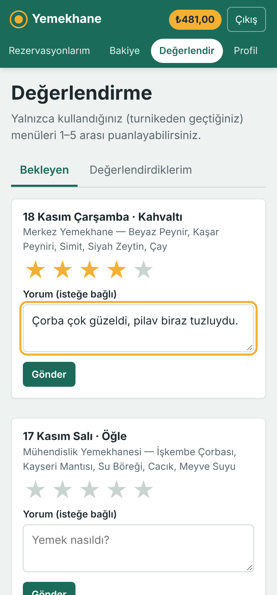
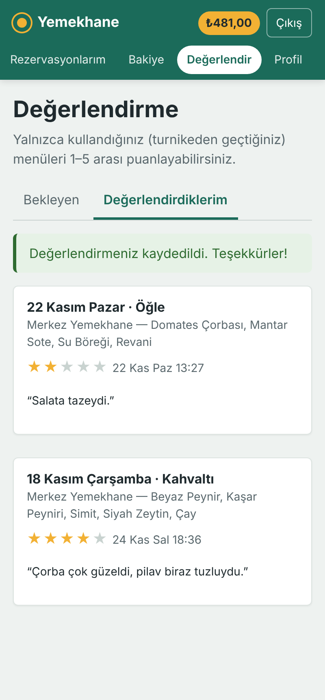
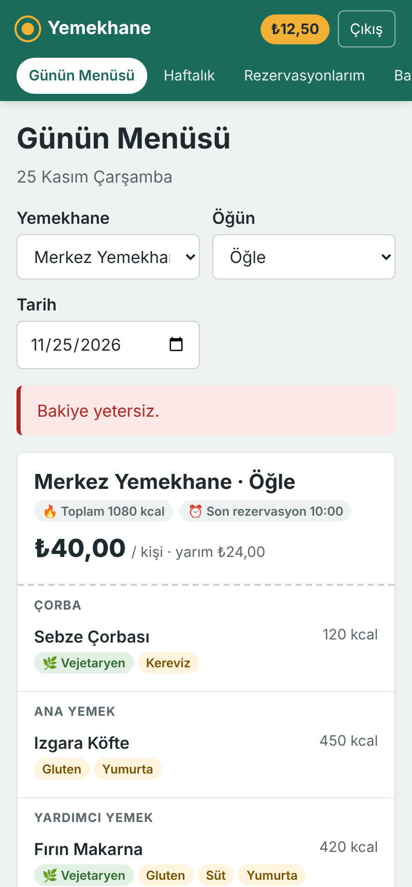
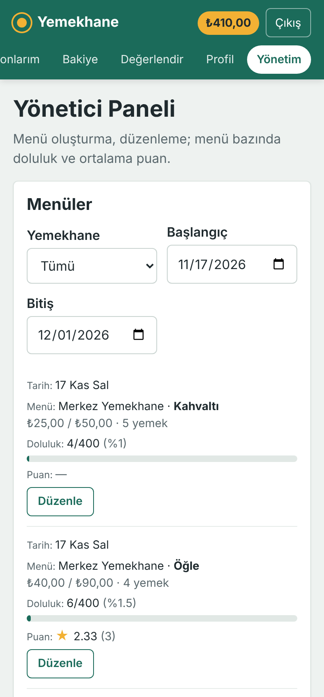
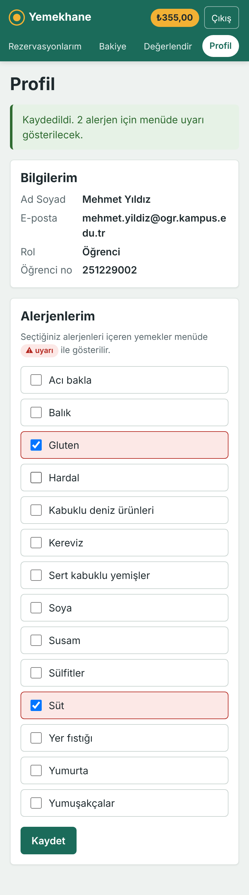
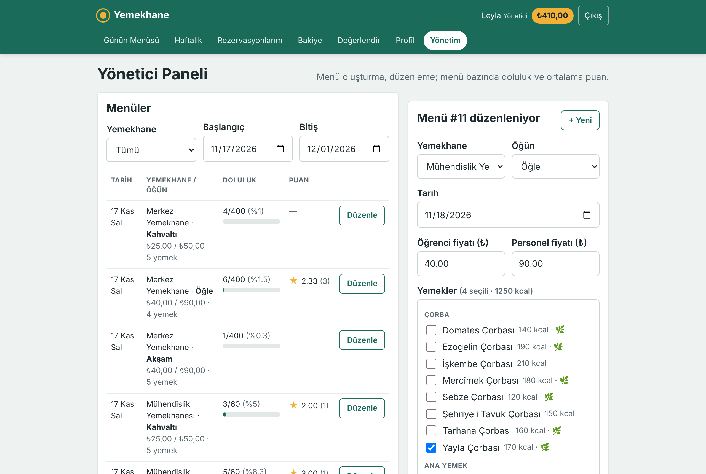
| Görev | Anahtar | Süre | Silinme |
|---|---|---|---|
| Menü önbelleği | menu:{yemekhane_id}:{tarih}:{ogun_id} | EXAT = menünün gününün 23:59:59'u (geçmiş tarihte bugünün sonu) | Yönetici menüyü oluşturduğunda/değiştirdiğinde (taşındıysa eski ve yeni anahtar) |
| Oturum | oturum:{token} (64 hex) | 1800 sn; her istekte GETEX ... EX 1800 ile atomik yenilenir | Çıkışta DEL |
Önbellekte yalnızca kullanıcıdan bağımsız menü içeriği tutulur (yemekler, kalori, alerjenler, fiyatlar). Boş yer, kullanıcının rezervasyonu, rolüne göre fiyat ve alerjen uyarısı her istekte ayrıca hesaplanır; böylece tek bir kayıt tüm kullanıcılara hizmet eder ve doluluk bayatlamaz.
Geçersiz kılma sırası: menü kaynağa yazılır → uygulama WAIT_FOR_EXECUTED_GTID_SET ile replikanın bu yazmayı almasını bekler
(en çok 2 sn) → Redis kaydı silinir. Önce silip beklemeseydik, araya giren bir okuma replikadaki eski menüyü okuyup önbelleğe yeniden
yazabilirdi ve eski menü gün sonuna kadar görünürdü. Redis'e ulaşılamazsa menü doğrudan veritabanından gelir (site çalışır), oturum
işlemleri ise anlaşılır bir 503 mesajı verir.
async function menuIcerigi(yemekhaneId, tarih, ogunId) {
const k = menuOnbellek.anahtar(yemekhaneId, tarih, ogunId);
const onbellekte = await menuOnbellek.getir(k);
if (onbellekte !== undefined) {
gunlukYaz.bilgi('menu', `${k} kaynak=redis`);
return { menu: onbellekte, kaynak: 'redis' };
}
const satirlar = await menuVeri.menuDetay(db.okuma, yemekhaneId, tarih, ogunId);
const menu = kurallar.menuyuGrupla(satirlar);
gunlukYaz.bilgi('menu', `${k} kaynak=veritabani(${db.okuma.ad})`);
if (menu) await menuOnbellek.yaz(k, menu, tarih, zaman.bugun()); // menü yoksa önbelleğe yazılmaz
return { menu, kaynak: 'veritabani' };### 0. Temiz başlangıç: bu menünün önbellek kaydı silinir
$ docker compose exec -T redis redis-cli DEL menu:1:2026-11-25:2
0
### 1a. İlk istek (yarın öğle, Merkez) → X-Menu-Kaynak: veritabani
$ curl -s -D - -o /dev/null -b /tmp/tmp.TzaPitb65P 'http://localhost:8080/api/menuler/gunluk?yemekhane_id=1&ogun_id=2&tarih=2026-11-25' | grep -i x-menu-kaynak
X-Menu-Kaynak: veritabani
### 1b. İkinci istek → X-Menu-Kaynak: redis
$ curl -s -D - -o /dev/null -b /tmp/tmp.TzaPitb65P 'http://localhost:8080/api/menuler/gunluk?yemekhane_id=1&ogun_id=2&tarih=2026-11-25' | grep -i x-menu-kaynak
X-Menu-Kaynak: redis
### 1c. Uygulama günlüğü
$ docker compose logs --no-log-prefix uygulama | grep '\[menu\] menu:1:2026-11-25:2' | tail -2
2026-11-24T15:34:52.296Z BILGI [menu] menu:1:2026-11-25:2 kaynak=veritabani(replika)
2026-11-24T15:34:52.321Z BILGI [menu] menu:1:2026-11-25:2 kaynak=redis
### 1d. Redis'teki kayıt ve kalan süre (saniye, günün sonuna kadar)
$ docker compose exec -T redis redis-cli --scan --pattern 'menu:*' | sort | head; echo '--- TTL'; docker compose exec -T redis redis-cli TTL menu:1:2026-11-25:2; echo '--- EXPIRETIME (unix)'; docker compose exec -T redis redis-cli EXPIRETIME menu:1:2026-11-25:2; echo '--- GET (ilk 300 karakter)'; docker compose exec -T redis redis-cli GET menu:1:2026-11-25:2 | cut -c1-300
menu:1:2026-11-25:2
--- TTL
105906
--- EXPIRETIME (unix)
1795640399
--- GET (ilk 300 karakter)
{"surum":1,"menu":{"menu_id":50,"tarih":"2026-11-25","yemekhane_id":1,"yemekhane":"Merkez Yemekhane","ogun_id":2,"ogun":"Öğle","rezervasyon_son":"2026-11-25 10:00:00","ogrenci_fiyati":40,"personel_fiyati":90,"toplam_kalori":1080,"vejetaryen":false,"kategoriler":[{"id":1,"ad":"Çorba","sira":1,"yem
### 2a. Yönetici menüyü değiştirir (menü 50, bir yemek ekler/çıkarır)
$ curl -s -b /tmp/tmp.zTLVVrR0Uu -X PUT -H 'Content-Type: application/json' -d '{"id": 50, "yemekhane_id": 1, "tarih": "2026-11-25", "ogun_id": 2, "ogrenci_fiyati": 40, "personel_fiyati": 90, "yemek_idler": [6, 11, 25, 29, 41]}' http://localhost:8080/api/yonetim/menuler/50; echo
{"id":50,"eski":{"id":50,"yemekhane_id":1,"tarih":"2026-11-25","ogun_id":2,"ogrenci_fiyati":40,"personel_fiyati":90,"yemek_idler":[6,11,25,29]},"yeni":{"yemekhane_id":1,"ogun_id":2,"tarih":"2026-11-25","ogrenci_fiyati":40,"personel_fiyati":90,"yemek_idler":[6,11,25,29,41]}}
### 2b. Eski kayıt silindi (EXISTS 0)
$ docker compose exec -T redis redis-cli EXISTS menu:1:2026-11-25:2
0
### 2c. Uygulama günlüğü: geçersiz kılma
$ docker compose logs --no-log-prefix uygulama | grep 'geçersiz kılındı' | tail -1
2026-11-24T15:34:53.272Z BILGI [onbellek] geçersiz kılındı menu:1:2026-11-25:2 {"silinen":1}
### 2d. Sonraki istek veritabanından, yeni menüyle
$ curl -s -D /dev/stderr -b /tmp/tmp.TzaPitb65P 'http://localhost:8080/api/menuler/gunluk?yemekhane_id=1&ogun_id=2&tarih=2026-11-25' 2>&1 >/dev/null | grep -i x-menu-kaynak; curl -s -b /tmp/tmp.TzaPitb65P 'http://localhost:8080/api/menuler/gunluk?yemekhane_id=1&ogun_id=2&tarih=2026-11-25' | python3 -c 'import sys,json;m=json.load(sys.stdin)["menu"];print([y["ad"] for k in m["kategoriler"] for y in k["yemekler"]])'
X-Menu-Kaynak: veritabani
['Sebze Çorbası', 'Izgara Köfte', 'Fırın Makarna', 'Çoban Salata', 'Mevsim Meyvesi']
### 3a. Oturum anahtarı ve süresi (1800 sn, her istekte yenilenir)
$ docker compose exec -T redis redis-cli --scan --pattern 'oturum:*' | grep -c . | sed 's/^/toplam oturum: /'; docker compose exec -T redis redis-cli TTL oturum:15164943315c161f16833e939685f939531be4e8e7785d0ac53db649ba52180d; docker compose exec -T redis redis-cli GET oturum:15164943315c161f16833e939685f939531be4e8e7785d0ac53db649ba52180d
toplam oturum: 2
1800
{"kullaniciId":7,"ad":"Mehmet","soyad":"Yıldız","rol":"ogrenci","eposta":"mehmet.yildiz@ogr.kampus.edu.tr","olusturma":1795534492162}
### 3b. 3 sn sonra TTL azaldı, istek atınca tekrar 1800 oldu
$ docker compose exec -T redis redis-cli TTL oturum:15164943315c161f16833e939685f939531be4e8e7785d0ac53db649ba52180d; curl -s -o /dev/null -w 'GET /api/ben → %{http_code}\n' -b /tmp/tmp.TzaPitb65P http://localhost:8080/api/ben; docker compose exec -T redis redis-cli TTL oturum:15164943315c161f16833e939685f939531be4e8e7785d0ac53db649ba52180d
1796
GET /api/ben → 200
1800
### 3c. Uygulama container'ı yeniden başlatılır
$ docker compose restart uygulama
Container yemekhane-uygulama-1 Restarting
Container yemekhane-uygulama-1 Started
### 3d. Aynı çerezle istek: oturum düşmedi (HTTP 200)
$ curl -s -w '\nHTTP %{http_code}\n' -b /tmp/tmp.TzaPitb65P http://localhost:8080/api/ben
{"kullanici":{"id":7,"ad":"Mehmet","soyad":"Yıldız","eposta":"mehmet.yildiz@ogr.kampus.edu.tr","rol":"ogrenci","ogrenci_no":"251229002","bakiye":655}}
HTTP 200
### 3e. Çıkış → Redis'teki oturum silinir
$ curl -s -b /tmp/tmp.TzaPitb65P -X POST http://localhost:8080/api/oturum/cikis; echo; docker compose exec -T redis redis-cli EXISTS oturum:15164943315c161f16833e939685f939531be4e8e7785d0ac53db649ba52180d; curl -s -o /dev/null -w 'eski çerezle /api/ben → HTTP %{http_code}\n' -b /tmp/tmp.TzaPitb65P http://localhost:8080/api/ben
{"tamam":true}
0
eski çerezle /api/ben → HTTP 401
| Değişiklik | Karar |
|---|---|
ogunler.yarim_porsiyon | Kural veride durur (Kahvaltı 0, Öğle/Akşam 1). Kahvaltıya açılırsa tek UPDATE yeter, kod değişmez. |
rezervasyonlar.porsiyon ENUM('tam','yarim') DEFAULT 'tam' | Var olan 367 satır otomatik "tam" olur: geçmiş rezervasyonlar tam sayılır, ucret zaten ödenen tutarı tuttuğu için iade doğru kalır. |
fn_porsiyon_ucreti() | %60 oranı tek yerde. Yordam da uygulamanın gösterdiği fiyat da bunu kullanır; ekrandaki fiyat ile kesilen ücret farklı olamaz. |
sp_rezervasyon_yap(kullanici, menu, porsiyon) | Kahvaltıda yarım → "Bu öğünde yarım porsiyon seçilemez."; yarım porsiyon da bir kişilik yer kaplar; hareket açıklaması "Rezervasyon (yarım porsiyon)". |
kullanici_alerjenleri | Çoka çok; kullanıcı silinirse seçimleri de silinir. Uyarı eşleştirmesi menüden ayrı yapılır, önbellek paylaşımlı kalır. |
| Redis | Önbellek yapı sürümü 1 → 2. scripts/redis_menu_temizle.sh eski menu:* kayıtlarını SCAN + UNLINK ile siler (oturumlar korunur); uygulama da eski sürümlü bir kayda rastlarsa onu okumaz ve siler. |
Migration tekrar çalıştırılabilir (idempotent): MySQL'de ADD COLUMN IF NOT EXISTS olmadığından geçici bir yardımcı yordam
information_schema'ya bakarak sütunu yalnızca yoksa ekler. Yordamın imzası değiştiği için sıra şudur: migration → hemen ardından yeni uygulama
sürümü. Arada eski sürüm 2 parametreyle çağırırsa rezervasyon hata verir; canlı ortamda bu birkaç saniyelik pencere bakım duyurusuyla yönetilir.
### 0a. Migration öncesi: kaynakta rezervasyon tablosu (porsiyon sütunu yok)
$ docker compose exec -T mysql-primary mysql --default-character-set=utf8mb4 -uroot -pyemekhane_kok yemekhane -e 'SHOW COLUMNS FROM rezervasyonlar' | cut -f1
Field
id
kullanici_id
menu_id
durum
ucret
olusturma
kullanma_zamani
iptal_zamani
### 0b. Migration öncesi veri özeti (sonra karşılaştırılacak)
$ docker compose exec -T mysql-primary mysql --default-character-set=utf8mb4 -uroot -pyemekhane_kok yemekhane -e 'SELECT COUNT(*) AS rezervasyon, SUM(ucret) AS toplam_ucret FROM rezervasyonlar; SELECT COUNT(*) AS kullanici, SUM(bakiye) AS toplam_bakiye FROM kullanicilar'
rezervasyon toplam_ucret
367 16250.00
kullanici toplam_bakiye
30 10037.50
### 0c. Redis'te eski yapıdaki (surum 1) menü kayıtları
$ docker compose exec -T redis redis-cli --scan --pattern 'menu:*' </dev/null | sort; echo '--- örnek:'; k=$(docker compose exec -T redis redis-cli --scan --pattern 'menu:*' </dev/null | head -1); docker compose exec -T redis redis-cli GET $k </dev/null | cut -c1-120
menu:1:2026-11-25:2
menu:2:2026-11-24:1
menu:2:2026-11-24:2
menu:2:2026-11-24:3
menu:2:2026-11-25:1
menu:2:2026-11-25:2
menu:2:2026-11-25:3
menu:2:2026-11-26:1
menu:2:2026-11-26:2
menu:2:2026-11-26:3
--- örnek:
{"surum":1,"menu":{"menu_id":53,"tarih":"2026-11-25","yemekhane_id":2,"yemekhane":"Mühendislik Yemekhanesi","ogun_id":2
### 1. Migration KAYNAKTA uygulanır (replikaya ayrıca uygulanmaz)
$ docker compose exec -T mysql-primary mysql --default-character-set=utf8mb4 -uroot -pyemekhane_kok yemekhane < db/init/04_degisiklik.sql && echo 'migration tamam (çıkış kodu 0)'
migration tamam (çıkış kodu 0)
### 1b. Tekrar çalıştırma güvenli (idempotent)
$ docker compose exec -T mysql-primary mysql --default-character-set=utf8mb4 -uroot -pyemekhane_kok yemekhane < db/init/04_degisiklik.sql && echo 'ikinci çalıştırma tamam (çıkış kodu 0)'
ikinci çalıştırma tamam (çıkış kodu 0)
### 2a. Mevcut veri bozulmadı: geçmiş rezervasyonlar 'tam', toplamlar aynı
$ docker compose exec -T mysql-primary mysql --default-character-set=utf8mb4 -uroot -pyemekhane_kok yemekhane -e 'SELECT porsiyon, COUNT(*) FROM rezervasyonlar GROUP BY porsiyon; SELECT COUNT(*) AS rezervasyon, SUM(ucret) AS toplam_ucret FROM rezervasyonlar; SELECT COUNT(*) AS kullanici, SUM(bakiye) AS toplam_bakiye FROM kullanicilar'
porsiyon COUNT(*)
tam 367
rezervasyon toplam_ucret
367 16250.00
kullanici toplam_bakiye
30 10037.50
### 2b. Bakiye = hareket toplamı kuralı bozulmadı (uyuşmayan kullanıcı sayısı 0)
$ docker compose exec -T mysql-primary mysql --default-character-set=utf8mb4 -uroot -pyemekhane_kok yemekhane -e 'SELECT COUNT(*) AS uyusmayan FROM kullanicilar k WHERE k.bakiye <> (SELECT COALESCE(SUM(tutar),0) FROM bakiye_hareketleri h WHERE h.kullanici_id = k.id)'
uyusmayan
0
### 3a. REPLİKADAN: SHOW CREATE TABLE rezervasyonlar
$ docker compose exec -T mysql-replica mysql --default-character-set=utf8mb4 -uroot -pyemekhane_kok yemekhane -e 'SHOW CREATE TABLE rezervasyonlar\G'
*************************** 1. row ***************************
Table: rezervasyonlar
Create Table: CREATE TABLE `rezervasyonlar` (
`id` int unsigned NOT NULL AUTO_INCREMENT,
`kullanici_id` int unsigned NOT NULL,
`menu_id` int unsigned NOT NULL,
`durum` enum('aktif','kullanildi','iptal') CHARACTER SET utf8mb4 COLLATE utf8mb4_tr_0900_ai_ci NOT NULL DEFAULT 'aktif',
`porsiyon` enum('tam','yarim') COLLATE utf8mb4_tr_0900_ai_ci NOT NULL DEFAULT 'tam' COMMENT 'yarim: tam fiyatın %60''ı',
`ucret` decimal(8,2) NOT NULL,
`olusturma` datetime NOT NULL DEFAULT CURRENT_TIMESTAMP,
`kullanma_zamani` datetime DEFAULT NULL,
`iptal_zamani` datetime DEFAULT NULL,
PRIMARY KEY (`id`),
UNIQUE KEY `uq_rezervasyon` (`kullanici_id`,`menu_id`),
KEY `ix_rezervasyon_menu_durum` (`menu_id`,`durum`),
CONSTRAINT `fk_rez_kullanici` FOREIGN KEY (`kullanici_id`) REFERENCES `kullanicilar` (`id`),
CONSTRAINT `fk_rez_menu` FOREIGN KEY (`menu_id`) REFERENCES `menuler` (`id`)
) ENGINE=InnoDB AUTO_INCREMENT=368 DEFAULT CHARSET=utf8mb4 COLLATE=utf8mb4_tr_0900_ai_ci
### 3b. REPLİKADAN: SHOW CREATE TABLE kullanici_alerjenleri
$ docker compose exec -T mysql-replica mysql --default-character-set=utf8mb4 -uroot -pyemekhane_kok yemekhane -e 'SHOW CREATE TABLE kullanici_alerjenleri\G'
*************************** 1. row ***************************
Table: kullanici_alerjenleri
Create Table: CREATE TABLE `kullanici_alerjenleri` (
`kullanici_id` int unsigned NOT NULL,
`alerjen_id` tinyint unsigned NOT NULL,
`olusturma` datetime NOT NULL DEFAULT CURRENT_TIMESTAMP,
PRIMARY KEY (`kullanici_id`,`alerjen_id`),
KEY `ix_ka_alerjen` (`alerjen_id`),
CONSTRAINT `fk_ka_alerjen` FOREIGN KEY (`alerjen_id`) REFERENCES `alerjenler` (`id`),
CONSTRAINT `fk_ka_kullanici` FOREIGN KEY (`kullanici_id`) REFERENCES `kullanicilar` (`id`) ON DELETE CASCADE
) ENGINE=InnoDB DEFAULT CHARSET=utf8mb4 COLLATE=utf8mb4_tr_0900_ai_ci COMMENT='Kullanıcının profilinde seçtiği alerjenler (menüde uyarı için)'
### 3c. REPLİKADAN: ogunler.yarim_porsiyon
$ docker compose exec -T mysql-replica mysql --default-character-set=utf8mb4 -uroot -pyemekhane_kok yemekhane -e 'SELECT id, ad, yarim_porsiyon FROM ogunler'
id ad yarim_porsiyon
1 Kahvaltı 0
2 Öğle 1
3 Akşam 1
### 3d. REPLİKADAN: güncellenmiş sp_rezervasyon_yap parametreleri ve fn_porsiyon_ucreti
$ docker compose exec -T mysql-replica mysql --default-character-set=utf8mb4 -uroot -pyemekhane_kok yemekhane -e "SELECT PARAMETER_NAME, DATA_TYPE FROM information_schema.PARAMETERS WHERE SPECIFIC_NAME='sp_rezervasyon_yap' ORDER BY ORDINAL_POSITION; SELECT fn_porsiyon_ucreti(40,'yarim') AS ogrenci_yarim, fn_porsiyon_ucreti(90,'yarim') AS personel_yarim"
PARAMETER_NAME DATA_TYPE
p_kullanici_id int
p_menu_id int
p_porsiyon varchar
ogrenci_yarim personel_yarim
24.00 54.00
### 3e. Replikasyon çalışıyor, gecikme yok
$ docker compose exec -T mysql-replica mysql -uroot -pyemekhane_kok -e 'SHOW REPLICA STATUS\G' | grep -E 'Replica_IO_Running|Replica_SQL_Running:|Seconds_Behind_Source|Last_SQL_Error:'
Replica_IO_Running: Yes
Replica_SQL_Running: Yes
Seconds_Behind_Source: 0
Last_SQL_Error:
### 4. Yeni uygulama sürümü devreye alınır (veritabanlarına dokunmadan)
$ docker compose up -d --build --no-deps uygulama frontend 2>&1 | tail -4
Container yemekhane-uygulama-1 Starting
Container yemekhane-frontend-1 Starting
Container yemekhane-uygulama-1 Started
Container yemekhane-frontend-1 Started
### 5. Redis'teki eski yapıdaki menü kayıtları temizlenir
$ bash scripts/redis_menu_temizle.sh
Temizlik öncesi menu:* kayıt sayısı: 10
menu:2:2026-11-25:2
menu:2:2026-11-24:1
menu:2:2026-11-24:3
menu:2:2026-11-26:3
menu:2:2026-11-25:3
menu:2:2026-11-26:2
menu:2:2026-11-26:1
menu:2:2026-11-24:2
menu:2:2026-11-25:1
menu:1:2026-11-25:2
UNLINK → 10 kayıt silindi
Temizlik sonrası menu:* kayıt sayısı: 0
Oturumlar korunur, oturum:* kayıt sayısı: 2
### 6a. Yeni yapıdaki kayıt (surum 2, yarım porsiyon alanlarıyla)
$ curl -s -o /dev/null -b /tmp/tmp.lMJgnH6riw 'http://localhost:8080/api/menuler/gunluk?yemekhane_id=1&ogun_id=2&tarih=2026-11-25'; docker compose exec -T redis redis-cli GET menu:1:2026-11-25:2 | python3 -c 'import sys,json;d=json.load(sys.stdin);m=d["menu"];print({k:d["surum"] if k=="surum" else m[k] for k in ["surum","ogun","yarim_porsiyon","ogrenci_fiyati","ogrenci_yarim_fiyati","personel_yarim_fiyati"]})'
{'surum': 2, 'ogun': 'Öğle', 'yarim_porsiyon': True, 'ogrenci_fiyati': 40, 'ogrenci_yarim_fiyati': 24, 'personel_yarim_fiyati': 54}
### 6b. Yarım porsiyon rezervasyonu (öğle, öğrenci 40 TL → 24 TL)
$ curl -s -b /tmp/tmp.lMJgnH6riw -H 'Content-Type: application/json' -d '{"menu_id":50,"porsiyon":"yarim"}' http://localhost:8080/api/rezervasyonlar; echo
{"rezervasyon_id":368,"ucret":24,"bakiye":631,"porsiyon":"yarim"}
### 6c. Kahvaltıda yarım porsiyon reddedilir (yordamın mesajı)
$ curl -s -b /tmp/tmp.lMJgnH6riw -H 'Content-Type: application/json' -d '{"menu_id":49,"porsiyon":"yarim"}' http://localhost:8080/api/rezervasyonlar; echo
{"hata":"Bu öğünde yarım porsiyon seçilemez."}
### 6d. Kaynakta kayıt ve bakiye hareketi
$ docker compose exec -T mysql-primary mysql --default-character-set=utf8mb4 -uroot -pyemekhane_kok yemekhane -e "SELECT id, menu_id, durum, porsiyon, ucret FROM rezervasyonlar WHERE kullanici_id=7 AND menu_id=50; SELECT tur, tutar, aciklama FROM bakiye_hareketleri WHERE kullanici_id=7 ORDER BY id DESC LIMIT 1"
id menu_id durum porsiyon ucret
368 50 aktif yarim 24.00
tur tutar aciklama
rezervasyon -24.00 Rezervasyon (yarım porsiyon)
### 6e. Profilde alerjen seçimi (Süt=7, Gluten=1) ve menüde uyarı
$ curl -s -b /tmp/tmp.lMJgnH6riw -X PUT -H 'Content-Type: application/json' -d '{"alerjen_idler":[7,1]}' http://localhost:8080/api/profil/alerjenler | python3 -c 'import sys,json;print("seçili:",[a["ad"] for a in json.load(sys.stdin)["alerjenler"] if a["secili"]])'; curl -s -b /tmp/tmp.lMJgnH6riw 'http://localhost:8080/api/menuler/gunluk?yemekhane_id=1&ogun_id=2&tarih=2026-11-25' | python3 -c 'import sys,json;m=json.load(sys.stdin)["menu"];print("uyarılı yemek sayısı:",m["uyarili_yemek_sayisi"]);[print(" ",y["ad"],"→",y["uyari"] or "-") for k in m["kategoriler"] for y in k["yemekler"]]'
seçili: ['Gluten', 'Süt']
uyarılı yemek sayısı: 2
Sebze Çorbası → -
Izgara Köfte → ['Gluten']
Fırın Makarna → ['Gluten', 'Süt']
Çoban Salata → -
Mevsim Meyvesi → -
### 6f. Replikada kullanıcının alerjenleri
$ docker compose exec -T mysql-replica mysql --default-character-set=utf8mb4 -uroot -pyemekhane_kok yemekhane -e 'SELECT * FROM kullanici_alerjenleri WHERE kullanici_id = 7'
kullanici_id alerjen_id olusturma
7 1 2026-11-24 18:35:09
7 7 2026-11-24 18:35:09
### 6g. İptal: yarım ücret iade edilir
$ curl -s -b /tmp/tmp.lMJgnH6riw -X POST http://localhost:8080/api/rezervasyonlar/368/iptal; echo
{"rezervasyon_id":368,"iade":24,"bakiye":655}
### Sıfırdan kurulum: docker compose down -v && docker compose up -d (04_degisiklik.sql db/init içinde) Volume yemekhane_mysql-primary-veri Removed Container yemekhane-replica-setup-1 Exited Container yemekhane-uygulama-1 Starting Container yemekhane-uygulama-1 Started $ docker compose ps -a SERVICE STATUS frontend Up 22 seconds (healthy) mysql-primary Up 23 seconds (healthy) mysql-replica Up 22 seconds (healthy) redis Up 22 seconds (healthy) replica-setup Exited (0) 11 seconds ago uygulama Up 10 seconds (healthy) $ replikada migration (porsiyon sütunu, yeni tablo, yordam parametreleri) porsiyon COUNT(*) tam 367 Tables_in_yemekhane (kullanici_alerjenleri) kullanici_alerjenleri sp_parametre 3
Birim testleri (uygulama/test/, veritabanı gerekmez): iş kuralları, önbellek anahtarı ve süresi, hata çevirisi, Aşama 4 kuralları.
Uçtan uca testler (testler/e2e.mjs): çalışan sisteme gerçek HTTP istekleri; yordam mesajlarının aynen iletilmesi, okuma-sonrası-yazma tutarlılığı,
önbellek kaynağı (X-Menu-Kaynak) ve geçersiz kılma, yarım porsiyon ücreti ve iadesi, alerjen uyarısı, yetki.
$ cd uygulama && npm test (birim testleri, veritabanı gerekmez)
ok 1 - yarimFiyatSec: öğle/akşamda rolüne göre, kahvaltıda null
ok 2 - porsiyonCoz: boş → tam, yalnızca tam/yarim
ok 3 - alerjenUyarisiEkle: yalnızca kullanıcının alerjenleri, menü değişmez
ok 4 - menuyuGrupla: yarım porsiyon alanları önbelleğe giren nesnede
ok 5 - önbellek yapı sürümü 2 (Aşama 4 ile değişti; eski kayıtlar okunmaz)
ok 6 - fiyatSec: öğrenci öğrenci fiyatı, personel ve yönetici personel fiyatı öder
ok 7 - rezervasyonDugmesi: son saat, kapasite ve mevcut rezervasyon
ok 8 - iptalEdilebilir: yalnızca süresi dolmamış aktif rezervasyon
ok 9 - menuyuGrupla: kategori sırası, toplam kalori, vejetaryen, alerjenler
ok 10 - tarihGecerli ve tarihEkle
ok 11 - tutarCoz: biçim denetimi, virgül kabul edilir, aralık yordamın işi
ok 12 - degerlendirmeDogrula: 1–5 tam sayı, yorum en fazla 500
ok 13 - menuFormuDogrula: zorunlu alanlar, fiyat ve yemek listesi
ok 14 - mysqlHatasiniCevir: 1644 mesajı aynen, 3819 kullanıcıya gösterilmez
ok 15 - anahtar biçimi: menu:{yemekhane_id}:{tarih}:{ogun_id}
ok 16 - süre: menünün gününün sonu; geçmiş menüde bugünün sonu
# tests 16
# pass 16
# fail 0
$ node --test testler/e2e.mjs (çalışan sisteme karşı uçtan uca)
ok 1 - giriş: hatalı şifre 401 ve Türkçe mesaj
ok 2 - oturumsuz istek 401
ok 3 - giriş (bcrypt) ve /ben
ok 4 - günün menüsü: yemekler, toplam kalori, öğrenci fiyatı
ok 5 - haftalık: 7 gün, rol fiyatı, geçmiş öğün pasif
ok 6 - rezervasyon → bakiye kaynaktan; tekrar → yordam mesajı; iptal → iade
ok 7 - yordam hata mesajları arayüze aynen iletilir
ok 8 - bakiye yükleme ve hareket geçmişi
ok 9 - değerlendirme: kullanılmamış menü reddedilir, kullanılmış menü bir kez puanlanır
ok 10 - yönetici paneli: yetki, menü oluşturma, çakışma, düzenleme, rapor
ok 11 - Aşama 4 · yarım porsiyon: öğlede %60 ücret, kahvaltıda reddedilir
ok 12 - Aşama 4 · personel yarım porsiyonu personel fiyatının %60ı
ok 13 - Aşama 4 · alerjen profili ve menüde uyarı
ok 14 - çıkış oturumu kapatır
# tests 14
# pass 14
# fail 0